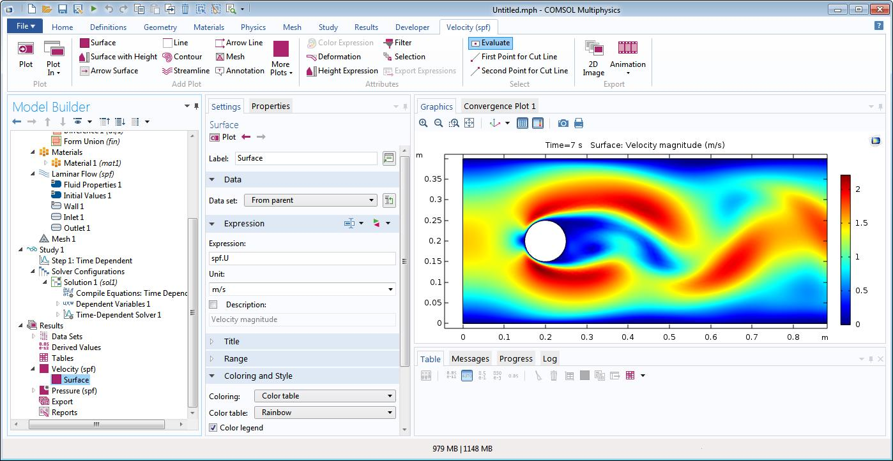
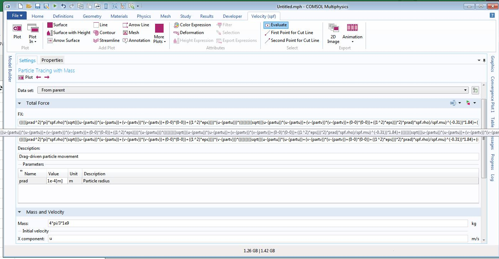

Comsol is Great
Definitely one of my favorite CAE programs is Comsol. I will tell you why. But first, some background. I have used a lot of CAE software, to make a short list:
agros2d
Comsol/Femlab
CalculiX
Elmer
Z88
Autodesk Simulation (formerly Algor)
ANSYS
Solidworks Simulation (CosmosWorks)
NX CAE, Nastran, Flow, etc.
Simerics Pumplinx
Code_Aster
Salome
OpenFoam
I am a power user of CAE. I have done a lot and thus seen a lot FEA and CFD. I am also a fan so I read up on the latest techniques such XFEM for crack propagation.
So, in looking at many different platforms, I can say that COMSOL is a very rich and modern platform. Every place you enter information, you can enter an expression. This is important because almost anything can be linked or made dependent on something else. For example, a viscosity that is locally pressure and temperature dependent can be implemented based a 2d lookup table in COMSOL. Another example is solving simple contact problems. Contact is where the loads are displacement dependent. Thus, if you can define the function that defines the force or pressure between two surfaces as a function of position, then you can solve a contact problem without having to use a searching algorithm between surfaces. This is useful for simple problems and may not be so useful in complicated problems where defining the displacement dependent forcing function is difficult.
COMSOL is a much better program than ANSYS even though ANSYS is the industry defacto standard for FEA. COMSOL is easier to use and more modern in the interface and coupling of Multiphysics. The couple between different physics is done via modules or input your own PDE. While entering your own PDE sounds daunting, you don't have to do that. You can just mix and match the modules using expression to couple material, boundary conditions, mesh, and other phenomenon to get the desire results.
Final comments: The COMSOL User interface is a thing of beauty. The documentation is outstanding.
Here is some screen shots from solving the Flow Past a cylinder example.

Velocity field in flow past a cylinder example.


CC BY-SA 4.0 Jason H. Nicholson. Last modified: November 16, 2025. Website built with Franklin.jl and the Julia programming language.